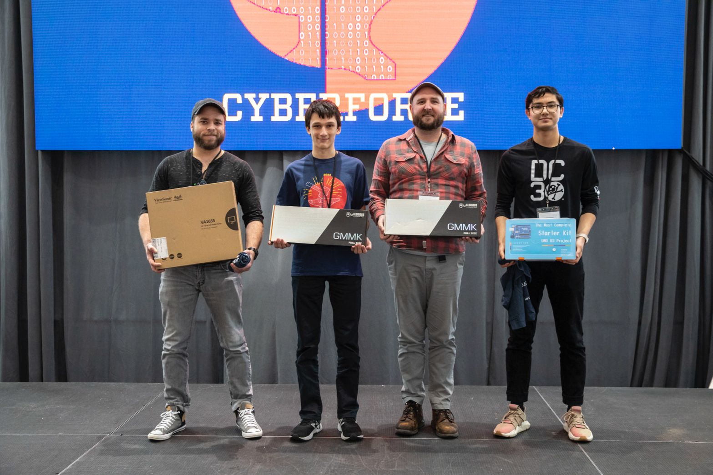

In the ever-evolving landscape of cybersecurity, staying ahead of the game is a constant challenge. To keep our skills sharp and learn about the latest threats and defenses, we must practice, and what better way to practice than to participate in capture-the-flag competitions (CTFs)? This year, I had the privilege of participating in Cyberforge, which is one of these conference and capture-the-flag events, and against all odds, emerged as the first-place winner.
Day 1: The Conference
The first day of CyberForge was a whirlwind of excitement. The venue was buzzing with participants from various backgrounds, ranging from seasoned professionals to eager students. Keynote speakers kicked off the event, shedding light on the latest trends, emerging threats, and innovative solutions in cybersecurity.
One of the highlights of this day was attending workshops led by industry experts. These sessions provided invaluable hands-on experience and deepened my understanding of advanced cybersecurity tools and techniques. Learning directly from experts in the field was a unique opportunity that CyberForge offered, setting it apart from other conferences. For example, I was put in a setting where my business was recently compromised by malware. I had to go through the incident response process and find the compromised machine, how it was compromised, and where the malware spread.
Day 2: The Competition
The CTF competition began on Day 2. It consisted of a series of challenges designed to test participants' skills in reconnaissance, forensics, web exploitation, reverse engineering, cryptography, and more. I joined a diverse team of like-minded individuals, and we split up the challenges based on the categories. I took on the forensics category because I excel at memory analysis and disk forensics. The team also planned on a tactic which will be talked about in the end.
When the competition started, the team eagerly took on the challenges, working together to crack the codes and capture the flags. The adrenaline was high as we tackled increasingly complex problems, each one pushing our limits. The competition was fierce, with the other teams pushing for the top spot.
One hour before the end of the competition, the organizers, MetaCTF, froze the scoreboard to add suspense. When the scoreboard is frozen, teams do not know their current ranking in the competition. Until this point, the team was sitting in one of the last places.
The Thrilling Conclusion
The closing ceremony of CyberForge 2023 was a moment of high anticipation. The organizers recognized the hard work, dedication, and skill of all participants. When the time came to announce the winners of the CTF competition, the room was charged with excitement. To my utter joy, our team was declared the first-place winner! The months of preparation, sleepless nights, and relentless effort had paid off. It was an indescribable feeling to stand on that stage.
Now for the strategy we used in the competition. Before the competition, the team agreed to not submit flags. We would collect them in a spreadsheet and submit them once the scoreboard froze. We did this to deceive the other teams into thinking they would win. As seen in the graphs, our team, DLLPickles, was in last place for most of the competition. However, once the scoreboard froze, we submit all the flags we were hogging and jumped to first. On the other hand, other teams could have been doing the same. It's a game of mind games.
Conclusion
CyberForge 2023 was not just an event; it was a transformative experience. It showcased the power of collaboration, the importance of staying updated with the latest developments in the field, and the rewards of perseverance. As I reflect on my journey to first place, I am filled with gratitude for the knowledge gained, the friendships made, and the unforgettable memories created.
If you're passionate about cybersecurity, I encourage you to participate in events like CyberForge. They provide a platform to test your skills, learn from experts, and connect with a community of like-minded individuals. Who knows, you might just find yourself standing on that stage, holding the trophy, and proudly proclaiming, "I got first place at CyberForge!"
